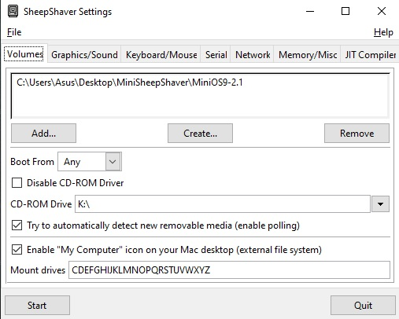
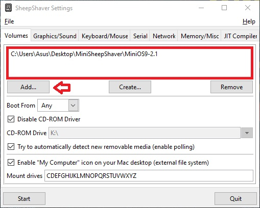
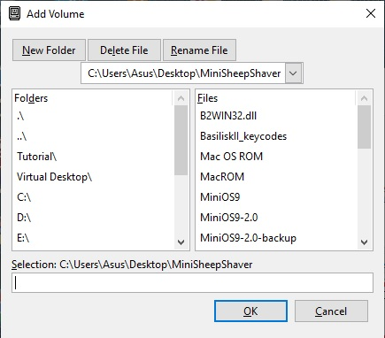
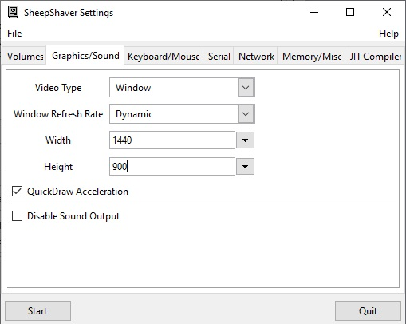
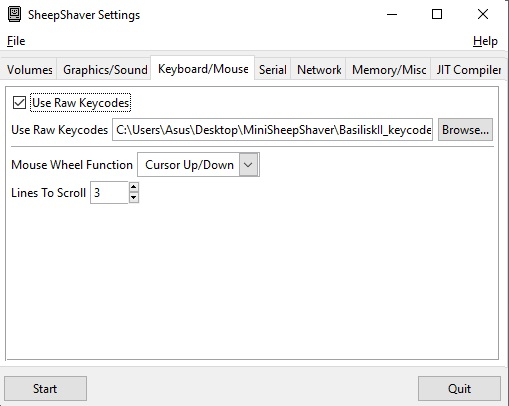
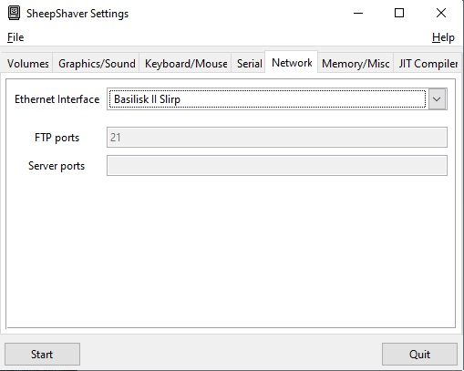
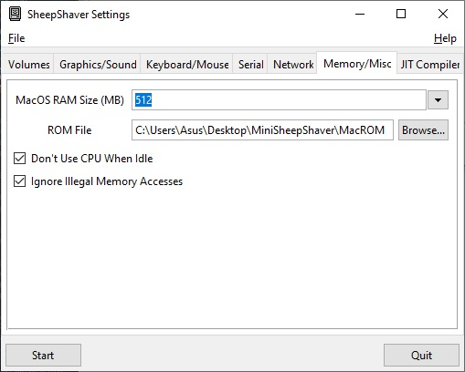
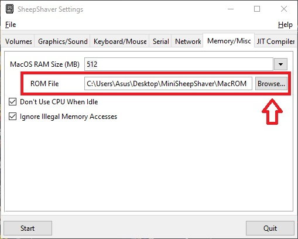

Windows Installation
Installing Sheepshaver on Windows is a fairly easy task, but in order to do so you will first need to ensure you have GTK+ Installed on your system. You can download it here or if you already downloaded it from the Downloads page, continue on to the next step. You may also need 7z which can be downloaded here if you have not set up 7z before.
The first step after decompressing the MiniSheepshaver package is to open your Sheepshaver GUI application in the root folder. Simply decompressing this program is not enough, we will need to tell Sheepshaver what to do. Unfortunately I can't build MiniSheepshaver pre-configured with all of the settings as everyones computers are different, and the names of folders and locations where you put MiniSheepshaver will vary. So we will have to configure this application on a per usage basis.
Volumes Tab
Upon opening the GUI you should be greeted by this page. If you get an error, please refer to the first step above about installing GTK+. You will notice a few different things on this screen, but rest assured most of the options are not going to be needed to change.
Volumes Tab (cont...)
 To add the MiniSheepshaver disk image to the window above, click on Add... and you will receive a new pop up window.
The right window pane is your systems folder structure, where you can locate files to add to your volumes that are outside the root folder of Sheepshaver, the right window by default is your root folder, and where you will see files contained within the directory you are currently working with. You will see a file that says MiniOS9-x.x, select this file and hit okay. You will then see this file populated in the window, like above.
If desired you can ensure the "Enable "MyComputer" icon on your Mac Desktop" is checked, in which case when booted into the system you will see "This PC" hard drive, which is the disk drives on your host computer, and you can navigate the folders and copy files directly from your host PC to Sheepshaver.
Graphics Tab
We wont spend a lot of time on this page, ensure window refresh rate is set to Dynamic for best performance, and manually type out the resolution you desire, I recommend at least 1280 x 1024, or like mine here, 1440 x 900. Please make sure you are not attempting to exceed the resolution of your host monitor. I recommend against Full Screen video type, as per reports that it is less stable than Window mode. Use Full Screen at your own risk.
Keyboard Tab
Not much going on here, Check the Use Raw Keycodes, and click "Browse..." then locate the file called BasiliskII_Keycodes. Inside this file is a set of key codes that changes the way your keyboard behaves inside Sheepshaver. I recommend scrolling down to the bottom of this page where I have put a small info block in the comments above the Windows key codes. It is recommended to avoid using your Windows Logo (which happens to be the Option key on Mac, otherwise known as the Apple) as it will pop up your Windows start menu and it will interfere with Sheepshaver. You should remap the Option key to an Fkey, usually I use F1. The notes in the file explain how to do this.
Network Tab
We can skip the Serial tab, as we will not be using it and go to the Network tab now. This is by far the easiest tab to set up. Just click the drop down menu and select Basilisk II Slirp and Network is configured.
Memory Tab
 A rather important part of the Sheepshaver setup is the Memory tab, believe it or not Oberin uses a pretty heavy chunk of memory, although this slimmed down Mac OS 9 does not, we still want to ensure we have plenty of memory as to not have (hopefully) many crashes. I recommend at least 512, though I have used 1024 with no problems. Another very important part of this page is the ROM file.
Like before you need to click on "Browse..." and select the Macintosh Rom which in this case for Windows is named MacRom. Select the Mac Rom and make sure to have Ignore Illegal Memory Access enabled. The other option, Don't use CPU when idle is optional. I have not noticed any performance gain or loss from using it, I just frequently have Sheepshaver running in the background even when I am not using it.
The moment of truth
And finally the time has come, provided you followed all of these steps, Sheepshaver is now configured. Continue by clicking on the Start button in the bottom left corner of the Sheepshaver GUI. You should fairly quickly see a very large window pop up and the Mac OS 9 boot screen begin to appear and load the extensions. Before you know it, you will be booted to a familiar desktop, with a few tweaks to make it more pleasing to look at. At this point you will have all of the files you need to begin playing Oberin, and should notice the Oberin shortcut icon on the desktop. Congratulations! You have successfully configured MiniSheepshaver!